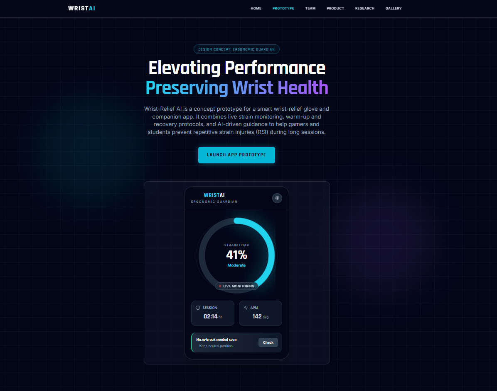
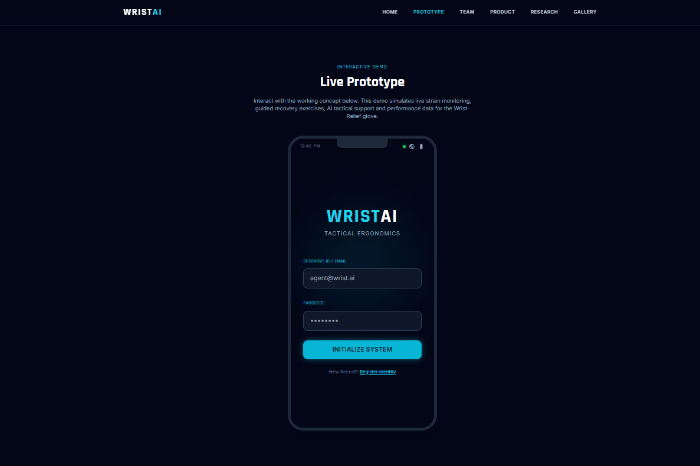
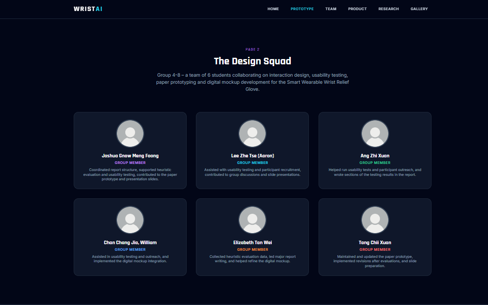
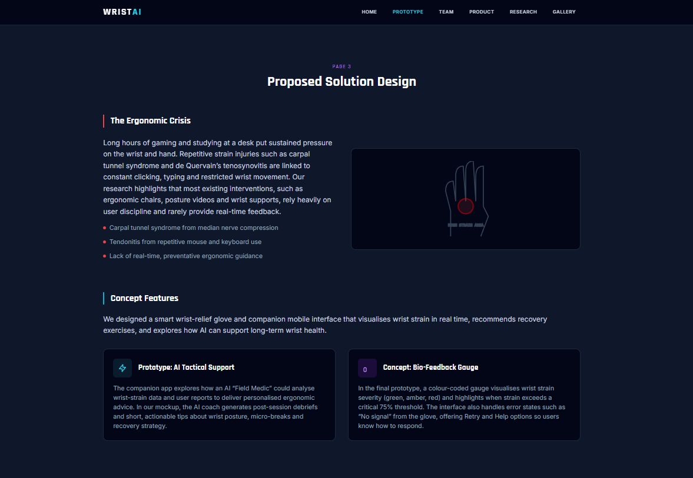
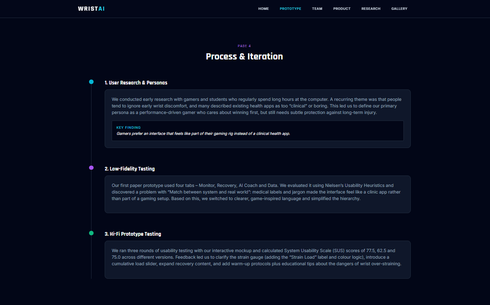
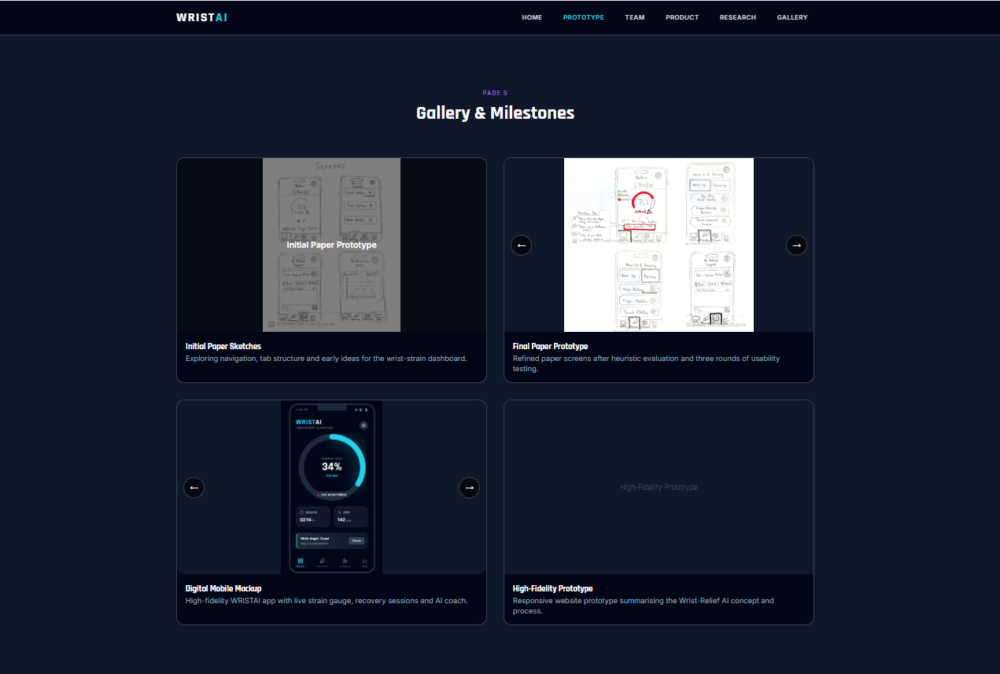
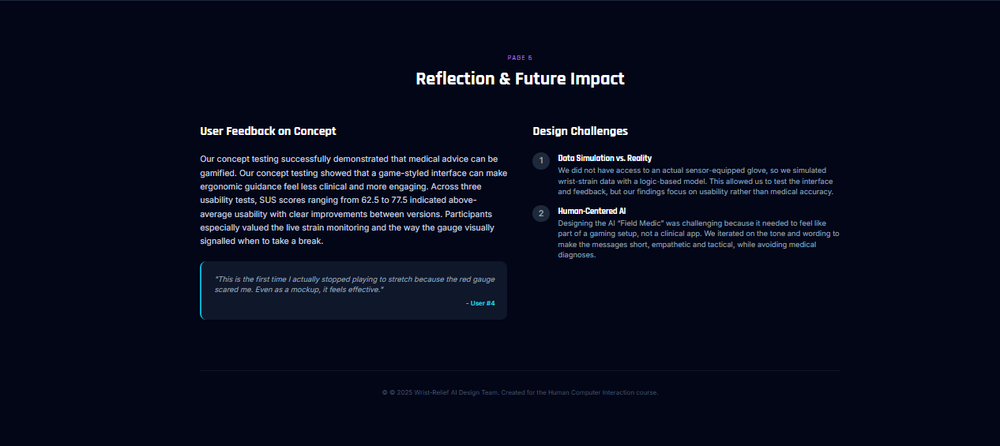

Page 5
Gallery & Milestones

Initial Paper Sketches
Exploring navigation, tab structure and early ideas for the wrist-strain dashboard.


Final Paper Prototype
Refined paper screens after heuristic evaluation and three rounds of usability testing.


Digital Mobile Mockup
High-fidelity WRISTAI app with live strain gauge, recovery sessions and AI coach.







High-Fidelity Prototype
Responsive website prototype summarising the Wrist-Relief AI concept and process.